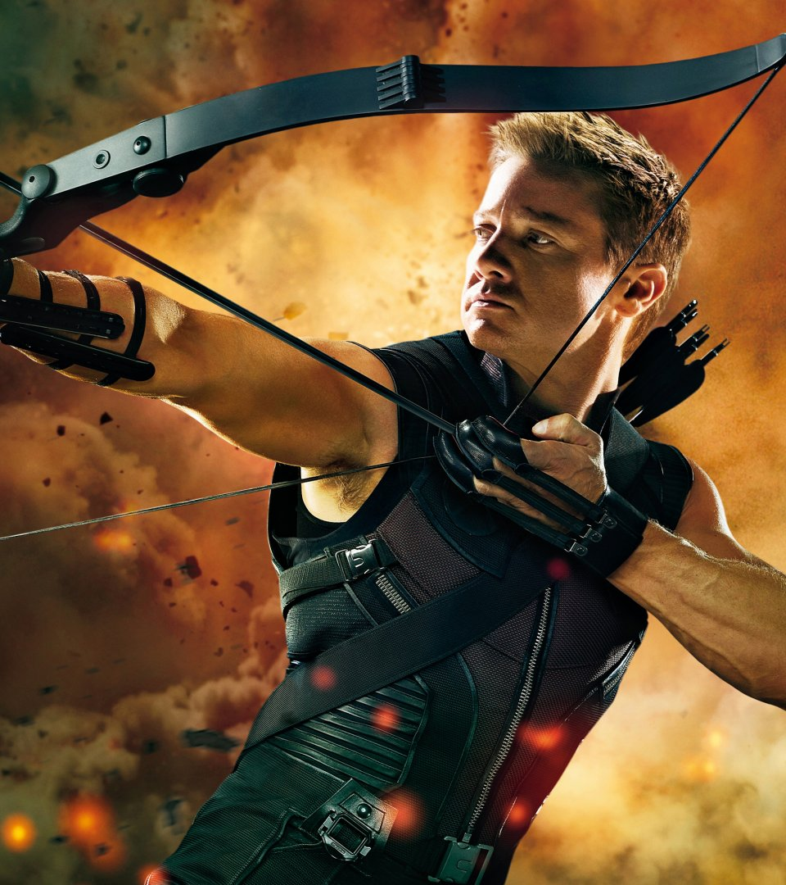
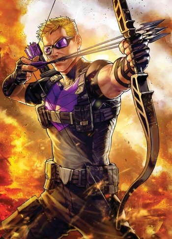
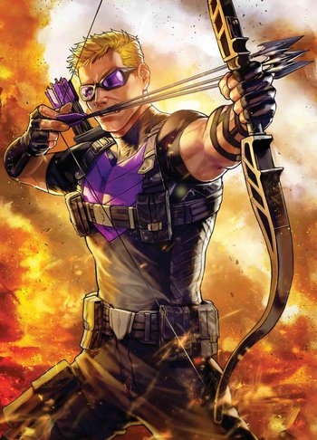

Hawkeye
 

Clint Barton
¿Quién es?
Creado por el escritor Stan Lee y el artista Don Heck, el personaje apareció por primera vez como un villano en Tales of Suspense # 57 (septiembre de 1964) y más tarde se unió a los Vengadores en The Avengers # 16 (mayo de 1965). Él ha sido un miembro prominente del equipo desde entonces. También ocupó el puesto # 44 en la lista de los 100 mejores héroes de cómics de IGN.
Clint Barton nació en Waverly, Iowa. A una edad joven perdió a sus padres en un accidente automovilístico. Después de seis años en un orfanato, Clint y su hermano Barney se escaparon para unirse al Carnaval Viajero de Maravillas Carson. Clint pronto llamó la atención del Espadachín, que tomó al niño como su asistente. Junto con la ayuda de Trick Shot, el espadachín entrenador, Clint decide convertirse en un maestro arquero. Clint encontró, más tarde, al espadachín malversando del dinero de la feria. Antes de que pudiera entregar a su mentor a las autoridades, Clint fue golpeado y tomado por muerto, permitiendo que el espadachín escapara de la ciudad. La relación de Clint con su hermano Barney y Trick Shot, pronto se deterioró. Clint adaptó sus habilidades de tiro con arco para convertirse en una atracción de carnaval estrella, un maestro arquero llamado "Ojo de Halcón", también conocida como “El tirador más grande del mundo”. Pasó algún tiempo como miembro del Circo de Ringmaster, antes de unirse al Circo de Coney Island. Fue testigo de Iron Man en acción y se inspiró para convertirse en un héroe disfrazado. Sin embargo, después de un malentendido en su primera aparición, Ojo de Halcón fue acusado de robo y catalogado de criminal. En la huida, el ingenuo Ojo de Halcón se topó con la Viuda Negra, una espía de la Unión Soviética, de la que se enamoró. Siguiendo ciegamente a la Viuda Negra, Ojo de Halcón la ayudó en su intento de robar la tecnología desarrollada por Tony Stark. En una de sus batallas con Iron Man, la Viuda Negra resultó gravemente herida. Ojo de Halcón la rescató y huyó de la batalla para salvar su vida. Pero antes de que Ojo de Halcón pudiera llevarla a un hospital, la Viuda Negra desapareció. Ojo de Halcón decidió ser un "tirador recto" a partir de entonces.
VENGADORES
Ojo de Halcón más tarde rescata a Edwin Jarvis y su madre de un asaltante. En agradecimiento, Jarvis invita a Ojo de Halcón a la Mansión de los Vengadores y se inicia una etapa de una confrontación para permitirle al arquero limpiar su nombre y ganarse la confianza de los Vengadores. Ojo de Halcón es entonces patrocinado por su antiguo enemigo Iron Man, que ve en él serias intenciones acerca de convertirse en un héroe. Dirigido por el Capitán América, Ojo de Halcón se une al equipo junto con Quicksilver y la Bruja Escarlata para formar la segunda encarnación de los Vengadores. Casi inmediatamente, Ojo de Halcón hace enfrentamientos con sus compañeros Vengadores. Sus intenciones románticas hacia la Bruja Escarlata se reunieron con la hostilidad de su hermano, Quicksilver. Ojo de Halcón se rebela contra el liderazgo del Capitán América (debido a sus problemas del pasado con las figuras de autoridad), pero con el tiempo llega a respetarlo como un mentor y un amigo. Cuando el espadachín trató de unirse a los Vengadores, Ojo de Halcón les advirtió de su historia previa con el villano. Ojo de Halcón disfruta de muchas aventuras con los Vengadores y demuestra ser un héroe en numerosas ocasiones. Sin embargo, cuando su arco se rompe durante un momento crucial en una batalla, Clint decide adoptar un nuevo traje e identidad al suceder a Hank Pym como el nuevo Goliat. Ojo de Halcón (como Goliath) fue abordado más tarde por su hermano Barney, que se había convertido en un gran delincuente. Barney se enteró de los planes de Egghead para construir un rayo de muerte láser en órbita para extorsionar dinero de los Estados Unidos y acudió a los Vengadores en busca de ayuda. Los Vengadores enfrentaron a Egghead y sus aliados, el Pensador Loco y el Amo de las Marionetas. Trágicamente, Barney murió en la batalla subsiguiente. (Más tarde se reveló que Barney Barton era en realidad un agente secreto del FBI.) Poco después de este encuentro, Egghead contrata al espadachín para capturar a Goliath (creyendo que es Hank Pym en lugar de Clint). Clint derrota y captura a ambos criminales, encontrando finalmente justicia para su hermano. Al finalizar la guerra Kree-Skrull, Clint retoma la identidad de Ojo de Halcón con un nuevo disfraz. Después de varias aventuras, Ojo de Halcón abandona a los Vengadores después de una amarga disputa con Visión sobre los afectos de la Bruja Escarlata. Ojo de Halcón vuelve a su traje original y ataca solo. Durante un tiempo, Ojo de Halcón pasa de una aventura a la siguiente. Él intenta regresar a la Viuda Negra y brevemente lucha contra su amor actual, Daredevil. Ojo de Halcón más tarde ayuda a Hulk contra el monstruo Zzzax. Luego sigue a Hulk de vuelta a la mansión del Doctor Strange, donde después de una escaramuza, Ojo de Halcón se une al "no equipo" de los Defensores por un corto período. Regresa brevemente a Los Vengadores para asistir a la boda de la Visión y la Bruja Escarlata Junto con Dos Pistolas Kid y Ghost Rider, Ojo de Halcón derrota al monstruo Mantícora. Ojo de Halcón regresa a Los Vengadores cuando los miembros actuales del equipo comienzan a desaparecer misteriosamente. Los Vengadores restantes descubren que es el trabajo del Coleccionista de Ancianos del Universo. Después de que todos sus compañeros de equipo fueron derrotados, Ojo de Halcón derrota por sí solo al Coleccionista, y se une al equipo para la batalla final contra Korvac. Después, la victoria de Ojo de Halcón se desvanece cuando el nuevo enlace del gobierno de los Vengadores, Henry Peter Gyrich, limita la lista y lo reemplaza con Falcon, en un intento de hacer que el equipo sea más "políticamente aceptable". Después de inicialmente no encontrar trabajo en su identidad civil, Ojo de Halcón gana empleo en Empresas Tecnológicas Cross como Jefe de Seguridad. Defiende la compañía contra el villano shi'ar Ave de muerte, Mister Fear y sabotea un complot del empleado de CTE Ambrose Connors. Ojo de Halcón luego regresa a la mansión de los Vengadores varios meses después para una breve visita "inducida" por la heroína Dragón Lunar. antes de volver a unirse por un período sostenido. Ojo de Halcón regresa al Carson Carnaval of Traveling Wonders para ayudar a Marcella Carson, la hija del propietario, contra Taskmaster. Él derrota al villano con la ayuda de Ant-Man. Más tarde, Ojo de Halcón inadvertidamente se venga de la muerte de su hermano. El villano Egghead, habiendo sido expuesto para enmarcar a Henry Pym, intenta disparar a Pym pero Ojo de Halcón atraviesa el cañón del arma con una flecha. El arma es una pistola de energía y explota, matando a Egghead al instante